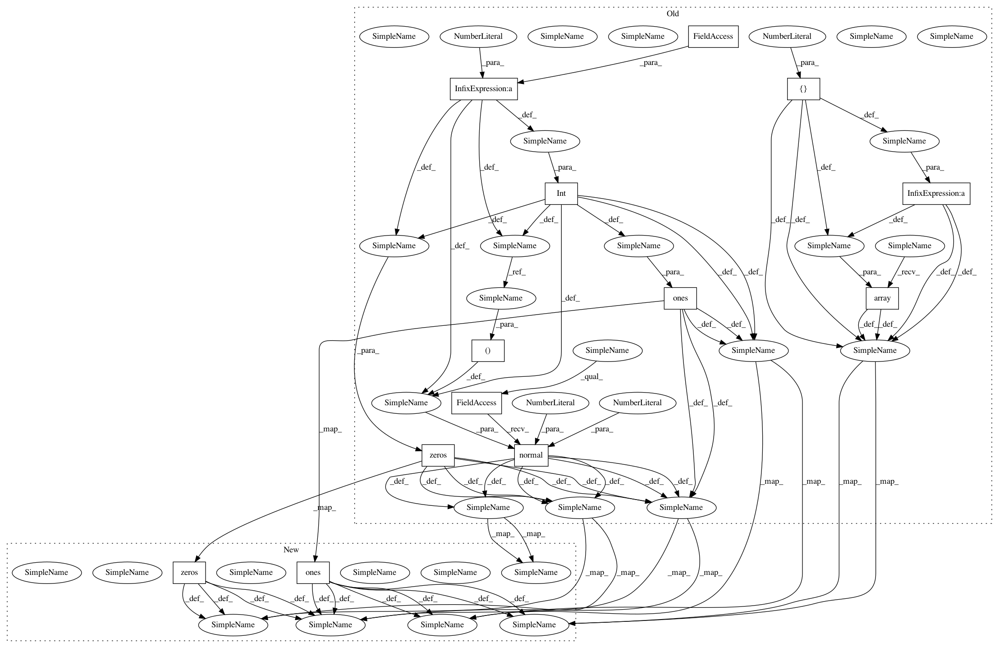

cf65784f7297dca491436112b9a5689ecd7533ec,lsgan/lsgan.py,LSGAN,train,#LSGAN#,93
Before Change
X_train = (X_train.astype(np.float32) - 127.5) / 127.5
X_train = np.expand_dims(X_train, axis=3)
half_batch = int(batch_size / 2)
for epoch in range(epochs):
// ---------------------
// Train Discriminator
// ---------------------
// Select a random half batch of images
idx = np.random.randint(0, X_train.shape[0], half_batch)
imgs = X_train[idx]
noise = np.random.normal(0, 1, (half_batch, self.latent_dim))
// Generate a half batch of new images
gen_imgs = self.generator.predict(noise)
// Train the discriminator
d_loss_real = self.discriminator.train_on_batch(imgs, np.ones((half_batch, 1)))
d_loss_fake = self.discriminator.train_on_batch(gen_imgs, np.zeros((half_batch, 1)))
d_loss = 0.5 * np.add(d_loss_real, d_loss_fake)
// ---------------------
// Train Generator
// ---------------------
noise = np.random.normal(0, 1, (batch_size, self.latent_dim))
// The generator wants the discriminator to label the generated samples
// as valid (ones)
valid_y = np.array([1] * batch_size)
// Train the generator
g_loss = self.combined.train_on_batch(noise, valid_y)
// Plot the progress
print ("%d [D loss: %f, acc.: %.2f%%] [G loss: %f]" % (epoch, d_loss[0], 100*d_loss[1], g_loss))
After Change
X_train = np.expand_dims(X_train, axis=3)
// Adversarial ground truths
valid = np.ones((batch_size, 1))
fake = np.zeros((batch_size, 1))
for epoch in range(epochs):
// ---------------------
// Train Discriminator
// ---------------------
// Select a random batch of images
idx = np.random.randint(0, X_train.shape[0], batch_size)
imgs = X_train[idx]
// Sample noise as generator input
noise = np.random.normal(0, 1, (batch_size, self.latent_dim))
// Generate a batch of new images
gen_imgs = self.generator.predict(noise)
// Train the discriminator
d_loss_real = self.discriminator.train_on_batch(imgs, valid)
d_loss_fake = self.discriminator.train_on_batch(gen_imgs, fake)
d_loss = 0.5 * np.add(d_loss_real, d_loss_fake)
// ---------------------
// Train Generator
// ---------------------
g_loss = self.combined.train_on_batch(noise, valid)
// Plot the progress
print ("%d [D loss: %f, acc.: %.2f%%] [G loss: %f]" % (epoch, d_loss[0], 100*d_loss[1], g_loss))
In pattern: SUPERPATTERN
Frequency: 3
Non-data size: 13
Instances
Project Name: eriklindernoren/Keras-GAN
Commit Name: cf65784f7297dca491436112b9a5689ecd7533ec
Time: 2018-05-15
Author: eriklindernoren@live.se
File Name: lsgan/lsgan.py
Class Name: LSGAN
Method Name: train
Project Name: eriklindernoren/Keras-GAN
Commit Name: cf65784f7297dca491436112b9a5689ecd7533ec
Time: 2018-05-15
Author: eriklindernoren@live.se
File Name: cogan/cogan.py
Class Name: COGAN
Method Name: train
Project Name: eriklindernoren/Keras-GAN
Commit Name: cf65784f7297dca491436112b9a5689ecd7533ec
Time: 2018-05-15
Author: eriklindernoren@live.se
File Name: bgan/bgan.py
Class Name: BGAN
Method Name: train
Project Name: eriklindernoren/Keras-GAN
Commit Name: cf65784f7297dca491436112b9a5689ecd7533ec
Time: 2018-05-15
Author: eriklindernoren@live.se
File Name: lsgan/lsgan.py
Class Name: LSGAN
Method Name: train